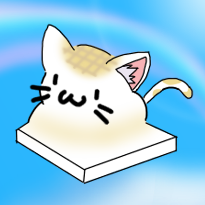
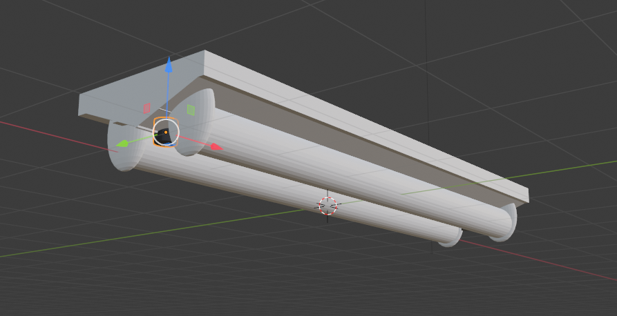
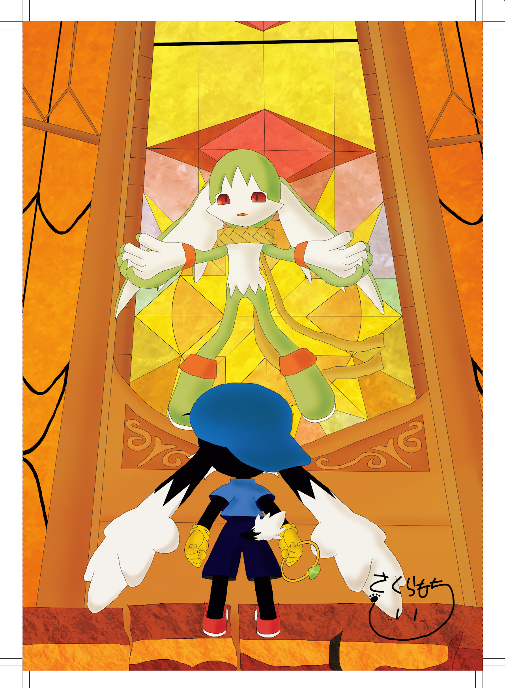

2D作品
作品概要
このキャラクターは自信が開発したbot用のアイコンとして作成した画像です。猫餅と呼ばれる餅があると知り、こんなんだったら可愛いだろうという想像を膨らませながら書いてみました。頭にはお餅が焼けているかのような模様にしてみました。
制作時期：2022年2月
制作期間：2日間
制作人数：1人
使用ツール：MediBang Paint Pro
MediBang Paint Proとは
高機能でありながらも使いやすいイラスト＆マンガ制作ツールです。元々、別のソフトをよく利用していましたが、無料で使いやすいということもあり、こちらを最近では愛用しています。ブラシなどのダウンロードもできるほか、漫画作成ツールということもあり、前に使っていたソフトとは違って、トーンを貼ることもできるなど高機能です。
3D作品
作品概要
この作品は、Perfect Crime用に制作した3DCG作品です。部屋の電灯を作ってみました。比較的簡単な図形のみで作成したため、初めての3D作品ですが個人的に満足のいく出来栄えになりました。
制作時期：2021年8月
制作期間：1日
制作人数：1人
使用ツール：blender
brenderとは、
オープンソースのフリーウェアであり、本格的かつ商用アプリにも負けない機能を持ち、世界中のユーザに利用されています。3DCGを作成するためのソフトです。このソフトでエフェクトやアニメージョンなども作成可能らしいです。blenderは初めて間もないので、知らない機能もまだまだありますが、いづれ使いこなせるようになりたいと思っているソフトです。
アンソロジー
作品概要
この作品は、風のクロノア2 20周年を記念して作られたアンソロジーに参加した作品となります。

もうすでに作品全体の公開が解禁されているので全体像です。こちらが寄稿したイラストとなっています。
ゲーム中で個人的にもっとも印象に残っているゲーム中のシーンである、哀しみの王と対峙している様子を描いてみました。
参加者などの情報に関しては以下をご覧ください。
参加者一覧です！！30名の方の力作がつまっています！！ pic.twitter.com/asswPmFp23
— 世界が望んだ贈りもの ～風のクロノア２ 20周年記念非公式イラストアンソロジー～ (@klo2_20thansoro) August 6, 2021
制作時期：2021年4月-7月
制作期間：90日間
制作人数：約30人
使用ツール：MediBang Paint Pro